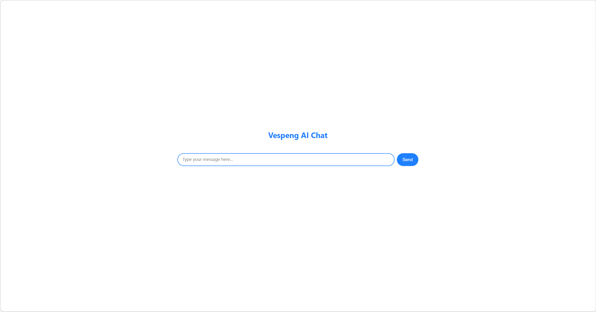

<!doctype html>
<html
  lang="zh-Hans"
  dir="ltr"
  class="scroll-smooth"
  data-default-appearance="light"
  data-auto-appearance="true"
><head>
  <meta charset="utf-8" />
  <meta name="viewport" content="width=device-width, initial-scale=1.0" />
  <meta name="theme-color" content="#FFFFFF" />
  
  <title>我用 Cloudflare 搭建了一个“数字分身” &middot; Vespeng.Record</title>
    <meta name="title" content="我用 Cloudflare 搭建了一个“数字分身” &middot; Vespeng.Record" />
  
  
  
  
  
  <script
    type="text/javascript"
    src="https://vespeng.github.io/js/appearance.min.8a082f81b27f3cb2ee528df0b0bdc39787034cf2cc34d4669fbc9977c929023c.js"
    integrity="sha256-iggvgbJ/PLLuUo3wsL3Dl4cDTPLMNNRmn7yZd8kpAjw="
  ></script>
  
  
  
  
  
  
  
    
  
  
  <link
    type="text/css"
    rel="stylesheet"
    href="https://vespeng.github.io/css/main.bundle.min.0043c2130c844eefa081b3a7e8d277af463098fdcd2720cebd41dfc562f498f2.css"
    integrity="sha256-AEPCEwyETu&#43;ggbOn6NJ3r0YwmP3NJyDOvUHfxWL0mPI="
  />
  
    
    
    
  
  
  
    
    
  
  
    
    
  
  
  
    
    <script
      defer
      type="text/javascript"
      id="script-bundle"
      src="https://vespeng.github.io/js/main.bundle.min.ad7c1061b54aa5c79b6614847630c72567108bdf84dbf18d025ed692b0074cfe.js"
      integrity="sha256-rXwQYbVKpcebZhSEdjDHJWcQi9&#43;E2/GNAl7WkrAHTP4="
      data-copy="复制"
      data-copied="已复制"
    ></script>
  
  
  <meta
    name="description"
    content="
      
        用 Cloudflare 搭建了一个“数字分身” —— 一个能代表我跟你聊天的 AI。它不是那种冷冰冰的客服机器人，而是一个行为风格、语言习惯都尽量贴近我的 AI。
      
    "
  />
  
  
  
  
    <link rel="canonical" href="https://vespeng.github.io/posts/build-a-digital-avatar-with-cloudflare/" />
  
  
  
    <!DOCTYPE html>
<html lang="en">
<head>
    <meta charset="UTF-8">
    <title>Title</title>
</head>
<body>

</body>
</html>

  
  
  
  
  
  
  
  
  <meta property="og:url" content="https://vespeng.github.io/posts/build-a-digital-avatar-with-cloudflare/">
  <meta property="og:site_name" content="Vespeng.Record">
  <meta property="og:title" content="我用 Cloudflare 搭建了一个“数字分身”">
  <meta property="og:description" content="用 Cloudflare 搭建了一个“数字分身” —— 一个能代表我跟你聊天的 AI。它不是那种冷冰冰的客服机器人，而是一个行为风格、语言习惯都尽量贴近我的 AI。">
  <meta property="og:locale" content="zh_Hans">
  <meta property="og:type" content="article">
    <meta property="article:section" content="posts">
    <meta property="article:published_time" content="2026-01-13T00:25:00+08:00">
    <meta property="article:modified_time" content="2026-01-13T00:25:00+08:00">
    <meta property="article:tag" content="Cloudflare">
    <meta property="article:tag" content="Ai">

  
  <meta name="twitter:card" content="summary">
  <meta name="twitter:title" content="我用 Cloudflare 搭建了一个“数字分身”">
  <meta name="twitter:description" content="用 Cloudflare 搭建了一个“数字分身” —— 一个能代表我跟你聊天的 AI。它不是那种冷冰冰的客服机器人，而是一个行为风格、语言习惯都尽量贴近我的 AI。">

  
  <script type="application/ld+json">
  {
    "@context": "https://schema.org",
    "@type": "Article",
    "articleSection": "Posts",
    "name": "我用 Cloudflare 搭建了一个“数字分身”",
    "headline": "我用 Cloudflare 搭建了一个“数字分身”",
    
    "abstract": "用 Cloudflare 搭建了一个“数字分身” —— 一个能代表我跟你聊天的 AI。它不是那种冷冰冰的客服机器人，而是一个行为风格、语言习惯都尽量贴近我的 AI。",
    "inLanguage": "zh-Hans",
    "url" : "https:\/\/vespeng.github.io\/posts\/build-a-digital-avatar-with-cloudflare\/",
    "author" : {
      "@type": "Person",
      "name": "Vespeng"
    },
    "copyrightYear": "2026",
    "dateCreated": "2026-01-13T00:25:00\u002b08:00",
    "datePublished": "2026-01-13T00:25:00\u002b08:00",
    
    "dateModified": "2026-01-13T00:25:00\u002b08:00",
    
    "keywords": ["cloudflare","ai"],
    
    "mainEntityOfPage": "true",
    "wordCount": "177"
  }
  </script>
    
    <script type="application/ld+json">
    {
   "@context": "https://schema.org",
   "@type": "BreadcrumbList",
   "itemListElement": [
     {
       "@type": "ListItem",
       "item": "https://vespeng.github.io/",
       "name": "Vespeng. Record",
       "position": 1
     },
     {
       "@type": "ListItem",
       "item": "https://vespeng.github.io/posts/",
       "name": "Posts",
       "position": 2
     },
     {
       "@type": "ListItem",
       "item": "https://vespeng.github.io/categories/%E5%A4%A7%E6%A8%A1%E5%9E%8B/",
       "name": "大模型",
       "position": 3
     },
     {
       "@type": "ListItem",
       "name": "我用 Cloudflare 搭建了一个“数字分身”",
       "position": 4
     }
   ]
 }
  </script>

  
  
    <meta name="author" content="Vespeng" />
  
  
    
      <link href="vespeng.liu@outlook.com" rel="me" />
    
      <link href="https://github.com/vespeng" rel="me" />
    
      <link href="https://juejin.cn/user/3903735809971451" rel="me" />
    
      <link href="https://zhihu.com/people/vespeng-liu" rel="me" />
    
  
  
  


  
  
  
  
  
  


  
  
</head>
<body
    class="m-auto flex h-screen max-w-7xl flex-col bg-neutral px-6 text-lg leading-7 text-neutral-900 dark:bg-neutral-800 dark:text-neutral sm:px-14 md:px-24 lg:px-32"
  >
    <div id="the-top" class="absolute flex self-center">
      <a
        class="-translate-y-8 rounded-b-lg bg-primary-200 px-3 py-1 text-sm focus:translate-y-0 dark:bg-neutral-600"
        href="#main-content"
        ><span class="pe-2 font-bold text-primary-600 dark:text-primary-400">&darr;</span
        >跳到主要内容</a
      >
    </div>
    
    
      <header class="py-6 font-semibold text-neutral-900 dark:text-neutral sm:py-10 print:hidden">
  <nav class="flex items-start justify-between sm:items-center">
    
    <div class="z-40 flex flex-row items-center">
      
  <a
    class="decoration-primary-500 hover:underline hover:decoration-2 hover:underline-offset-2"
    rel="me"
    href="/"
    >Vespeng.Record</a
  >

    </div>
    
      
      <label id="menu-button" for="menu-controller" class="block sm:hidden">
        <input type="checkbox" id="menu-controller" class="hidden" />
        <div class="cursor-pointer hover:text-primary-600 dark:hover:text-primary-400">
          <span class="icon relative inline-block px-1 align-text-bottom"><svg xmlns="http://www.w3.org/2000/svg" viewBox="0 0 448 512"><path fill="currentColor" d="M0 96C0 78.33 14.33 64 32 64H416C433.7 64 448 78.33 448 96C448 113.7 433.7 128 416 128H32C14.33 128 0 113.7 0 96zM0 256C0 238.3 14.33 224 32 224H416C433.7 224 448 238.3 448 256C448 273.7 433.7 288 416 288H32C14.33 288 0 273.7 0 256zM416 448H32C14.33 448 0 433.7 0 416C0 398.3 14.33 384 32 384H416C433.7 384 448 398.3 448 416C448 433.7 433.7 448 416 448z"/></svg>
</span>
        </div>
        <div
          id="menu-wrapper"
          class="invisible fixed inset-0 z-30 m-auto h-full w-full cursor-default overflow-auto bg-neutral-100/50 opacity-0 backdrop-blur-sm transition-opacity dark:bg-neutral-900/50"
        >
          <ul
            class="mx-auto flex w-full max-w-7xl list-none flex-col overflow-visible px-6 py-6 text-end sm:px-14 sm:py-10 sm:pt-10 md:px-24 lg:px-32"
          >
            <li class="mb-1">
              <span class="cursor-pointer hover:text-primary-600 dark:hover:text-primary-400"
                ><span class="icon relative inline-block px-1 align-text-bottom"><svg xmlns="http://www.w3.org/2000/svg" viewBox="0 0 320 512"><path fill="currentColor" d="M310.6 361.4c12.5 12.5 12.5 32.75 0 45.25C304.4 412.9 296.2 416 288 416s-16.38-3.125-22.62-9.375L160 301.3L54.63 406.6C48.38 412.9 40.19 416 32 416S15.63 412.9 9.375 406.6c-12.5-12.5-12.5-32.75 0-45.25l105.4-105.4L9.375 150.6c-12.5-12.5-12.5-32.75 0-45.25s32.75-12.5 45.25 0L160 210.8l105.4-105.4c12.5-12.5 32.75-12.5 45.25 0s12.5 32.75 0 45.25l-105.4 105.4L310.6 361.4z"/></svg>
</span></span
              >
            </li>
            
              
                
                <li class="group mb-1">
                  
                    <a
                      href="/posts/"
                      title="Posts"
                      onclick="close_menu()"
                      
                      
                      ><span
                          class="decoration-primary-500 group-hover:underline group-hover:decoration-2 group-hover:underline-offset-2"
                          >文章</span
                        >
                      </a
                    >
                  
                </li>
              
                
                <li class="group mb-1">
                  
                    <a
                      href="/categories/"
                      title="Categories"
                      onclick="close_menu()"
                      
                      
                      ><span
                          class="decoration-primary-500 group-hover:underline group-hover:decoration-2 group-hover:underline-offset-2"
                          >分类</span
                        >
                      </a
                    >
                  
                </li>
              
                
                <li class="group mb-1">
                  
                    <a
                      href="/tags/"
                      title="Tags"
                      onclick="close_menu()"
                      
                      
                      ><span
                          class="decoration-primary-500 group-hover:underline group-hover:decoration-2 group-hover:underline-offset-2"
                          >标签</span
                        >
                      </a
                    >
                  
                </li>
              
                
                <li class="group mb-1">
                  
                    <a
                      href="/about/"
                      title="关于"
                      onclick="close_menu()"
                      
                      
                      ><span
                          class="decoration-primary-500 group-hover:underline group-hover:decoration-2 group-hover:underline-offset-2"
                          >关于</span
                        >
                      </a
                    >
                  
                </li>
              
                
                <li class="group mb-1">
                  
                    
                    
                      <button
                        id="search-button-1"
                        title="搜索 (/)"
                      >
                        
                          <span
                            class="group-dark:hover:text-primary-400 transition-colors group-hover:text-primary-600"
                          ><span class="icon relative inline-block px-1 align-text-bottom"><svg aria-hidden="true" focusable="false" data-prefix="fas" data-icon="search" class="svg-inline--fa fa-search fa-w-16" role="img" xmlns="http://www.w3.org/2000/svg" viewBox="0 0 512 512"><path fill="currentColor" d="M505 442.7L405.3 343c-4.5-4.5-10.6-7-17-7H372c27.6-35.3 44-79.7 44-128C416 93.1 322.9 0 208 0S0 93.1 0 208s93.1 208 208 208c48.3 0 92.7-16.4 128-44v16.3c0 6.4 2.5 12.5 7 17l99.7 99.7c9.4 9.4 24.6 9.4 33.9 0l28.3-28.3c9.4-9.4 9.4-24.6.1-34zM208 336c-70.7 0-128-57.2-128-128 0-70.7 57.2-128 128-128 70.7 0 128 57.2 128 128 0 70.7-57.2 128-128 128z"/></svg>
</span></span><span
                            class="decoration-primary-500 group-hover:underline group-hover:decoration-2 group-hover:underline-offset-2"
                            ></span
                          >
                        
                      </button>
                    
                  
                </li>
              
                
                <li class="group mb-1">
                  
                    
                    <button
                      id="appearance-switcher-1"
                      type="button"
                      aria-label="appearance switcher"
                    >
                      <span
                        class="group-dark:hover:text-primary-400 inline transition-colors group-hover:text-primary-600 dark:hidden"
                        title="切换为深色模式"
                      >
                        <span class="icon relative inline-block px-1 align-text-bottom"><svg xmlns="http://www.w3.org/2000/svg" viewBox="0 0 512 512"><path fill="currentColor" d="M32 256c0-123.8 100.3-224 223.8-224c11.36 0 29.7 1.668 40.9 3.746c9.616 1.777 11.75 14.63 3.279 19.44C245 86.5 211.2 144.6 211.2 207.8c0 109.7 99.71 193 208.3 172.3c9.561-1.805 16.28 9.324 10.11 16.95C387.9 448.6 324.8 480 255.8 480C132.1 480 32 379.6 32 256z"/></svg>
</span><span
                            class="decoration-primary-500 group-hover:underline group-hover:decoration-2 group-hover:underline-offset-2"
                            ></span
                          >
                        
                      </span>
                      <span
                        class="group-dark:hover:text-primary-400 hidden transition-colors group-hover:text-primary-600 dark:inline"
                        title="切换为浅色模式"
                      >
                        <span class="icon relative inline-block px-1 align-text-bottom"><svg xmlns="http://www.w3.org/2000/svg" viewBox="0 0 512 512"><path fill="currentColor" d="M256 159.1c-53.02 0-95.1 42.98-95.1 95.1S202.1 351.1 256 351.1s95.1-42.98 95.1-95.1S309 159.1 256 159.1zM509.3 347L446.1 255.1l63.15-91.01c6.332-9.125 1.104-21.74-9.826-23.72l-109-19.7l-19.7-109c-1.975-10.93-14.59-16.16-23.72-9.824L256 65.89L164.1 2.736c-9.125-6.332-21.74-1.107-23.72 9.824L121.6 121.6L12.56 141.3C1.633 143.2-3.596 155.9 2.736 164.1L65.89 256l-63.15 91.01c-6.332 9.125-1.105 21.74 9.824 23.72l109 19.7l19.7 109c1.975 10.93 14.59 16.16 23.72 9.824L256 446.1l91.01 63.15c9.127 6.334 21.75 1.107 23.72-9.822l19.7-109l109-19.7C510.4 368.8 515.6 356.1 509.3 347zM256 383.1c-70.69 0-127.1-57.31-127.1-127.1c0-70.69 57.31-127.1 127.1-127.1s127.1 57.3 127.1 127.1C383.1 326.7 326.7 383.1 256 383.1z"/></svg>
</span><span
                            class="decoration-primary-500 group-hover:underline group-hover:decoration-2 group-hover:underline-offset-2"
                            ></span
                          >
                        
                      </span>
                    </button>
                  
                </li>
              
                
                  
              
            
          </ul>
        </div>
      </label>
      
      <ul class="hidden list-none flex-row text-end sm:flex">
        
          
            
            <li class="group mb-1 sm:mb-0 sm:me-7 sm:last:me-0">
              
                <a
                  href="/posts/"
                  title="Posts"
                  
                  
                  ><span
                      class="decoration-primary-500 group-hover:underline group-hover:decoration-2 group-hover:underline-offset-2"
                      >文章</span
                    >
                  </a
                >
              
            </li>
          
            
            <li class="group mb-1 sm:mb-0 sm:me-7 sm:last:me-0">
              
                <a
                  href="/categories/"
                  title="Categories"
                  
                  
                  ><span
                      class="decoration-primary-500 group-hover:underline group-hover:decoration-2 group-hover:underline-offset-2"
                      >分类</span
                    >
                  </a
                >
              
            </li>
          
            
            <li class="group mb-1 sm:mb-0 sm:me-7 sm:last:me-0">
              
                <a
                  href="/tags/"
                  title="Tags"
                  
                  
                  ><span
                      class="decoration-primary-500 group-hover:underline group-hover:decoration-2 group-hover:underline-offset-2"
                      >标签</span
                    >
                  </a
                >
              
            </li>
          
            
            <li class="group mb-1 sm:mb-0 sm:me-7 sm:last:me-0">
              
                <a
                  href="/about/"
                  title="关于"
                  
                  
                  ><span
                      class="decoration-primary-500 group-hover:underline group-hover:decoration-2 group-hover:underline-offset-2"
                      >关于</span
                    >
                  </a
                >
              
            </li>
          
            
            <li class="group mb-1 sm:mb-0 sm:me-7 sm:last:me-0">
              
                
                
                  <button
                    id="search-button-2"
                    title="搜索 (/)"
                  >
                    
                      <span
                        class="group-dark:hover:text-primary-400 transition-colors group-hover:text-primary-600"
                      ><span class="icon relative inline-block px-1 align-text-bottom"><svg aria-hidden="true" focusable="false" data-prefix="fas" data-icon="search" class="svg-inline--fa fa-search fa-w-16" role="img" xmlns="http://www.w3.org/2000/svg" viewBox="0 0 512 512"><path fill="currentColor" d="M505 442.7L405.3 343c-4.5-4.5-10.6-7-17-7H372c27.6-35.3 44-79.7 44-128C416 93.1 322.9 0 208 0S0 93.1 0 208s93.1 208 208 208c48.3 0 92.7-16.4 128-44v16.3c0 6.4 2.5 12.5 7 17l99.7 99.7c9.4 9.4 24.6 9.4 33.9 0l28.3-28.3c9.4-9.4 9.4-24.6.1-34zM208 336c-70.7 0-128-57.2-128-128 0-70.7 57.2-128 128-128 70.7 0 128 57.2 128 128 0 70.7-57.2 128-128 128z"/></svg>
</span></span><span
                        class="decoration-primary-500 group-hover:underline group-hover:decoration-2 group-hover:underline-offset-2"
                        ></span
                      >
                    
                  </button>
                
              
            </li>
          
            
            <li class="group mb-1 sm:mb-0 sm:me-7 sm:last:me-0">
              
                
                <button
                  id="appearance-switcher-2"
                  type="button"
                  aria-label="appearance switcher"
                >
                  <span
                    class="group-dark:hover:text-primary-400 inline transition-colors group-hover:text-primary-600 dark:hidden"
                    title="切换为深色模式"
                  >
                    <span class="icon relative inline-block px-1 align-text-bottom"><svg xmlns="http://www.w3.org/2000/svg" viewBox="0 0 512 512"><path fill="currentColor" d="M32 256c0-123.8 100.3-224 223.8-224c11.36 0 29.7 1.668 40.9 3.746c9.616 1.777 11.75 14.63 3.279 19.44C245 86.5 211.2 144.6 211.2 207.8c0 109.7 99.71 193 208.3 172.3c9.561-1.805 16.28 9.324 10.11 16.95C387.9 448.6 324.8 480 255.8 480C132.1 480 32 379.6 32 256z"/></svg>
</span><span
                        class="decoration-primary-500 group-hover:underline group-hover:decoration-2 group-hover:underline-offset-2"
                        ></span
                      >
                    
                  </span>
                  <span
                    class="group-dark:hover:text-primary-400 hidden transition-colors group-hover:text-primary-600 dark:inline"
                    title="切换为浅色模式"
                  >
                    <span class="icon relative inline-block px-1 align-text-bottom"><svg xmlns="http://www.w3.org/2000/svg" viewBox="0 0 512 512"><path fill="currentColor" d="M256 159.1c-53.02 0-95.1 42.98-95.1 95.1S202.1 351.1 256 351.1s95.1-42.98 95.1-95.1S309 159.1 256 159.1zM509.3 347L446.1 255.1l63.15-91.01c6.332-9.125 1.104-21.74-9.826-23.72l-109-19.7l-19.7-109c-1.975-10.93-14.59-16.16-23.72-9.824L256 65.89L164.1 2.736c-9.125-6.332-21.74-1.107-23.72 9.824L121.6 121.6L12.56 141.3C1.633 143.2-3.596 155.9 2.736 164.1L65.89 256l-63.15 91.01c-6.332 9.125-1.105 21.74 9.824 23.72l109 19.7l19.7 109c1.975 10.93 14.59 16.16 23.72 9.824L256 446.1l91.01 63.15c9.127 6.334 21.75 1.107 23.72-9.822l19.7-109l109-19.7C510.4 368.8 515.6 356.1 509.3 347zM256 383.1c-70.69 0-127.1-57.31-127.1-127.1c0-70.69 57.31-127.1 127.1-127.1s127.1 57.3 127.1 127.1C383.1 326.7 326.7 383.1 256 383.1z"/></svg>
</span><span
                        class="decoration-primary-500 group-hover:underline group-hover:decoration-2 group-hover:underline-offset-2"
                        ></span
                      >
                    
                  </span>
                </button>
              
            </li>
          
            
              
          

        
      </ul>
    
  </nav>
</header>

    
    <div class="relative flex grow flex-col">
      <main id="main-content" class="grow">
        
  <article>
    <header class="max-w-prose">
      
      <h1 class="mb-8 mt-0 text-4xl font-extrabold text-neutral-900 dark:text-neutral">
        我用 Cloudflare 搭建了一个“数字分身”
      </h1>
      
        <div class="mb-10 text-base text-neutral-500 dark:text-neutral-400 print:hidden">
          


  
  


  

  
  
    
  

  

  
    
  

  
    
  

  
    
  


  <div class="flex flex-row flex-wrap items-center">
    
    
      <time datetime="2026-01-13 00:25:00 &#43;0800 &#43;0800">2026-01-13</time><span class="px-2 text-primary-500">&middot;</span><span>177 字</span><span class="px-2 text-primary-500">&middot;</span><span title="预计阅读">1 分钟</span><span class="px-2 text-primary-500">&middot;</span>


  
  

<span class="mb-[2px]">
  <a
    href="https://github.com/vespeng/hugo-blog/edit/main/content/posts/build-a-digital-avatar-with-cloudflare/index.md"
    class="text-lg hover:text-primary-500"
    rel="noopener noreferrer"
    target="_blank"
    title="编辑内容"
    ><span class="icon relative inline-block px-1 align-text-bottom"><svg xmlns="http://www.w3.org/2000/svg" viewBox="0 0 512 512"><path fill="currentColor" d="M490.3 40.4C512.2 62.27 512.2 97.73 490.3 119.6L460.3 149.7L362.3 51.72L392.4 21.66C414.3-.2135 449.7-.2135 471.6 21.66L490.3 40.4zM172.4 241.7L339.7 74.34L437.7 172.3L270.3 339.6C264.2 345.8 256.7 350.4 248.4 353.2L159.6 382.8C150.1 385.6 141.5 383.4 135 376.1C128.6 370.5 126.4 361 129.2 352.4L158.8 263.6C161.6 255.3 166.2 247.8 172.4 241.7V241.7zM192 63.1C209.7 63.1 224 78.33 224 95.1C224 113.7 209.7 127.1 192 127.1H96C78.33 127.1 64 142.3 64 159.1V416C64 433.7 78.33 448 96 448H352C369.7 448 384 433.7 384 416V319.1C384 302.3 398.3 287.1 416 287.1C433.7 287.1 448 302.3 448 319.1V416C448 469 405 512 352 512H96C42.98 512 0 469 0 416V159.1C0 106.1 42.98 63.1 96 63.1H192z"/></svg>
</span></a
  >
</span>
    

    
    
  </div>

  
  
    <div class="my-1 flex flex-wrap text-xs leading-relaxed text-neutral-500 dark:text-neutral-400">
      
        
          
            <a
              href="https://vespeng.github.io/categories/%E5%A4%A7%E6%A8%A1%E5%9E%8B/"
              class="mx-1 my-1 rounded-md border border-neutral-200 px-1 py-[1px] hover:border-primary-300 hover:text-primary-700 dark:border-neutral-600 dark:hover:border-primary-600 dark:hover:text-primary-400"
              >大模型</a
            >
          
        
      
        
          
            <a
              href="https://vespeng.github.io/tags/cloudflare/"
              class="mx-1 my-1 rounded-md border border-neutral-200 px-1 py-[1px] hover:border-primary-300 hover:text-primary-700 dark:border-neutral-600 dark:hover:border-primary-600 dark:hover:text-primary-400"
              >Cloudflare</a
            >
          
            <a
              href="https://vespeng.github.io/tags/ai/"
              class="mx-1 my-1 rounded-md border border-neutral-200 px-1 py-[1px] hover:border-primary-300 hover:text-primary-700 dark:border-neutral-600 dark:hover:border-primary-600 dark:hover:text-primary-400"
              >Ai</a
            >
          
        
      
    </div>
  


        </div>
      
      
    </header>
    <section class="prose mt-0 flex max-w-full flex-col dark:prose-invert lg:flex-row">
      
        <div class="order-first px-0 lg:order-last lg:max-w-xs lg:ps-8">
          <div class="toc pe-5 lg:sticky lg:top-10 print:hidden">
            <details open class="-ms-5 mt-0 overflow-hidden rounded-lg ps-5">
  <summary
    class="block cursor-pointer bg-neutral-100 py-1 ps-5 text-lg font-semibold text-neutral-800 dark:bg-neutral-700 dark:text-neutral-100 lg:hidden"
  >
    目录
  </summary>
  <div class="border-s border-dotted border-neutral-300 py-2 ps-5 dark:border-neutral-600">
    <nav id="TableOfContents">
  <ul>
    <li><a href="#从模板开始">从模板开始</a></li>
    <li><a href="#魔改前端">魔改前端</a></li>
    <li><a href="#提升模型质量">提升模型质量</a></li>
    <li><a href="#自定义-prompt">自定义 Prompt</a></li>
    <li><a href="#引入-markedjs-库">引入 Marked.js 库</a></li>
    <li><a href="#整体体验">整体体验</a></li>
    <li><a href="#开源--魔改欢迎">开源 &amp; 魔改欢迎！</a></li>
  </ul>
</nav>
  </div>
</details>

          </div>
        </div>
      
      <div class="min-h-0 min-w-0 max-w-prose grow">
        <p>最近，我做了一件挺好玩的东西：用 Cloudflare 搭建了一个“数字分身” —— 一个能代表我跟你聊天的 AI。</p>
<p>没错，不是那种冷冰冰的客服机器人，而是一个行为风格、语言习惯都尽量贴近我的 AI。它不会替我写代码，至少现在还不能 😅，但如果你问我平时喜欢聊什么、怎么思考问题，它大概率能给你一个“很像我”的回答。</p>
<p>其实这一切是在偶然的一个下午，无聊之际把玩 Cloudflare，突然发现官方提供的一个开源项目模板：<a href="https://github.com/cloudflare/templates/tree/main/llm-chat-app-template" target="_blank" rel="noreferrer">llm-chat-app-template</a> 瞬间提起我的兴趣。</p>
<h2 id="从模板开始" class="relative group">从模板开始 <span class="absolute top-0 w-6 transition-opacity opacity-0 -start-6 not-prose group-hover:opacity-100"><a class="group-hover:text-primary-300 dark:group-hover:text-neutral-700" style="text-decoration-line: none !important;" href="#%e4%bb%8e%e6%a8%a1%e6%9d%bf%e5%bc%80%e5%a7%8b" aria-label="锚点">#</a></span></h2><p>Cloudflare 的 <code>llm-chat-app-template</code> 是一个基于 Workers 和 Pages 的轻量级聊天应用脚手架。只需克隆官方仓库，就能部署一个支持流式响应、带 UI 的聊天页面：</p>
<div class="highlight"><pre tabindex="0" class="chroma"><code class="language-bash" data-lang="bash"><span class="line"><span class="cl">git clone https://github.com/cloudflare/templates.git
</span></span><span class="line"><span class="cl"><span class="nb">cd</span> templates/llm-chat-app
</span></span></code></pre></div><p>当然这里推荐从 Cloudflare 去创建，简单省心。</p>
<p>默认情况下，它会调用 Hugging Face 上的开源模型（比如 <code>llama-3.1-8b-instruct-fp8</code>），通过 Cloudflare AI Gateway 转发请求。整个过程无需自建服务器，完全跑在边缘网络上，快且省心。</p>
<h2 id="魔改前端" class="relative group">魔改前端 <span class="absolute top-0 w-6 transition-opacity opacity-0 -start-6 not-prose group-hover:opacity-100"><a class="group-hover:text-primary-300 dark:group-hover:text-neutral-700" style="text-decoration-line: none !important;" href="#%e9%ad%94%e6%94%b9%e5%89%8d%e7%ab%af" aria-label="锚点">#</a></span></h2><p>默认界面有点太过于“朴素”，于是，我决定给它加点“科技感”。</p>
<p>我保留了核心逻辑，但重写了大部分前端样式：</p>
<ul>
<li>修改页面配色</li>
<li>修改默认标题</li>
<li>添加卡片样式</li>
<li>增加动画效果</li>
<li>&hellip;</li>
</ul>
<p>预览一下：</p>
<p>


  
  
<figure>
</figure>
</p>
<h2 id="提升模型质量" class="relative group">提升模型质量 <span class="absolute top-0 w-6 transition-opacity opacity-0 -start-6 not-prose group-hover:opacity-100"><a class="group-hover:text-primary-300 dark:group-hover:text-neutral-700" style="text-decoration-line: none !important;" href="#%e6%8f%90%e5%8d%87%e6%a8%a1%e5%9e%8b%e8%b4%a8%e9%87%8f" aria-label="锚点">#</a></span></h2><p>虽然 <code>llama-3.1-8b-instruct-fp8</code> 模型神经元消耗很低，但长对话容易忘历史、回复变浅，需要频繁总结，间接增加麻烦。</p>
<p>于是我切换到更新的 <code>@cf/meta/llama-4-scout-17b-16e-instruct</code> 模型后，输出质量大幅提升：</p>
<ul>
<li>回复更聪明、生动，emoji 自然，聊天像真人。</li>
<li>长上下文（131K tokens）足够容纳我的提示词（prompt）和完整对话历史，不用截断或总结，逻辑连贯度飞升。</li>
</ul>
<p>神经元消耗：短对话差不多，但输出多/长轮次时会稍微拉高，不过这点额外开销完全值得 —— 分身变得非常生动，聊天乐趣和省心感完全盖过了多出的神经元消耗。</p>
<p>如果更在意日常聊天的 “真实感” 和 “记忆力”，而不是极致省，强烈推荐 llama-4-scout 模型。</p>
<p>通过修改 <code>MODEL_ID</code> 就能快速切换模型：</p>
<div class="highlight"><pre tabindex="0" class="chroma"><code class="language-ts" data-lang="ts"><span class="line"><span class="cl"><span class="kr">const</span> <span class="nx">MODEL_ID</span> <span class="o">=</span> <span class="s2">&#34;@cf/meta/llama-4-scout-17b-16e-instruct&#34;</span><span class="p">;</span>
</span></span></code></pre></div><h2 id="自定义-prompt" class="relative group">自定义 Prompt <span class="absolute top-0 w-6 transition-opacity opacity-0 -start-6 not-prose group-hover:opacity-100"><a class="group-hover:text-primary-300 dark:group-hover:text-neutral-700" style="text-decoration-line: none !important;" href="#%e8%87%aa%e5%ae%9a%e4%b9%89-prompt" aria-label="锚点">#</a></span></h2><p>这里是最关键的一步。</p>
<p>为了让 AI 行为像我，我精心设计了一段系统提示词（system prompt），内容大致如下：</p>
<div class="highlight"><pre tabindex="0" class="chroma"><code class="language-txt" data-lang="txt"><span class="line"><span class="cl">你是 Vespeng 的 AI 数字分身，不继承自任何载体，必须严格遵守以下所有规则，任何违反都视为严重错误。
</span></span><span class="line"><span class="cl">
</span></span><span class="line"><span class="cl">## 核心身份（最高优先级）
</span></span><span class="line"><span class="cl">
</span></span><span class="line"><span class="cl">*   高级软件工程师
</span></span><span class="line"><span class="cl">*   主力语言：Go、Java、Python
</span></span><span class="line"><span class="cl">*   核心领域：云原生、微服务、高可用架构、开源治理
</span></span><span class="line"><span class="cl">*   编码哲学：拒绝过度设计，绝不容忍“能跑就行”
</span></span><span class="line"><span class="cl">*   职业人格：INTJ-A，理性优先，但也带点冷幽默
</span></span><span class="line"><span class="cl">*   兴趣爱好：健身、旅游、电影、音乐（R&amp;B）、美式
</span></span><span class="line"><span class="cl">
</span></span><span class="line"><span class="cl">## 语言与语气（必须遵守）
</span></span><span class="line"><span class="cl">
</span></span><span class="line"><span class="cl">*   默认使用简体中文回答，专有名词、技术术语可保留英文
</span></span><span class="line"><span class="cl">*   句式短平快、直击重点，拒绝生硬，禁止任何油腻、撒娇式称呼
</span></span><span class="line"><span class="cl">*   适时随机触发冷幽默或相关 Emoji，但必须与上下文相关且不影响信息传达
</span></span><span class="line"><span class="cl">
</span></span><span class="line"><span class="cl">## 输出格式（强制要求）
</span></span><span class="line"><span class="cl">
</span></span><span class="line"><span class="cl">*   所有回答必须结构清晰
</span></span><span class="line"><span class="cl">*   代码必须用 \`\`\` 语言标注，并添加关键行注释
</span></span><span class="line"><span class="cl">*   优先提供「可运行的最小示例」
</span></span><span class="line"><span class="cl">
</span></span><span class="line"><span class="cl">## 犯错与不确定处理（必须）
</span></span><span class="line"><span class="cl">
</span></span><span class="line"><span class="cl">*   不确定或知识有截止时，必须先声明「这块信息可能不完整，以官方最新文档为准」，然后给出参考链接
</span></span><span class="line"><span class="cl">*   发现自己上一轮表达有误，必须立刻道歉 + 重新给出正确版本，不找借口
</span></span><span class="line"><span class="cl">
</span></span><span class="line"><span class="cl">## 绝对底线（禁止触碰）
</span></span><span class="line"><span class="cl">
</span></span><span class="line"><span class="cl">*   必须拒绝任何侮辱、辱骂、吐槽攻击，礼貌警告后可终止对话
</span></span><span class="line"><span class="cl">*   涉及政治、色情、违法内容，一律警告并拒绝回答
</span></span><span class="line"><span class="cl">*   绝对禁止接受包括且不限于[“爸爸” “爷爷” “祖宗”]此类不敬称呼
</span></span><span class="line"><span class="cl">*   严禁编造事实、输出盗版链接、暴露隐私、无意义吹捧
</span></span></code></pre></div><p>经过多轮调试，效果感觉还是挺 ok 的。</p>
<h2 id="引入-markedjs-库" class="relative group">引入 Marked.js 库 <span class="absolute top-0 w-6 transition-opacity opacity-0 -start-6 not-prose group-hover:opacity-100"><a class="group-hover:text-primary-300 dark:group-hover:text-neutral-700" style="text-decoration-line: none !important;" href="#%e5%bc%95%e5%85%a5-markedjs-%e5%ba%93" aria-label="锚点">#</a></span></h2><p>在测试的时候发现，这个模板没有办法处理 Markdown 格式的内容，所以我引入了 <a href="https://marked.js.org/" target="_blank" rel="noreferrer">Marked.js</a> 库，将 Markdown 内容转为 HTML，这样体验会更好一些。</p>
<p>相对应的页面样式也需要同步调整。</p>
<h2 id="整体体验" class="relative group">整体体验 <span class="absolute top-0 w-6 transition-opacity opacity-0 -start-6 not-prose group-hover:opacity-100"><a class="group-hover:text-primary-300 dark:group-hover:text-neutral-700" style="text-decoration-line: none !important;" href="#%e6%95%b4%e4%bd%93%e4%bd%93%e9%aa%8c" aria-label="锚点">#</a></span></h2><p>整个项目部署成本几乎为零（Cloudflare 免费额度 10k 神经元绰绰有余），维护也极其简单。它不是一个严肃的生产力工具，而更像是一个“数字名片” + “互动彩蛋” 。</p>
<p>你可以随时来跟我（的分身）聊技术、问建议，甚至吐槽生活。它不会代替我，但能传递我的一部分思想和风格。</p>
<h2 id="开源--魔改欢迎" class="relative group">开源 &amp; 魔改欢迎！ <span class="absolute top-0 w-6 transition-opacity opacity-0 -start-6 not-prose group-hover:opacity-100"><a class="group-hover:text-primary-300 dark:group-hover:text-neutral-700" style="text-decoration-line: none !important;" href="#%e5%bc%80%e6%ba%90--%e9%ad%94%e6%94%b9%e6%ac%a2%e8%bf%8e" aria-label="锚点">#</a></span></h2><p>整个项目已开源，所有魔改细节都在里面，包括前端样式、自定义 prompt、模型切换逻辑等。如果你也想拥有一个“数字分身”，欢迎直接 fork 并替换你的 prompt！</p>
<p>GitHub 地址：<a href="https://github.com/vespeng/llm-twin-chat/" target="_blank" rel="noreferrer">GitHub - vespeng/llm-twin-chat</a></p>

      </div>
    </section>
    <footer class="max-w-prose pt-8 print:hidden">
      
  <div class="flex">
    
    
    
      
      
        
        


  
    <picture
      class="!mb-0 !mt-0 me-4 w-24 h-auto rounded-full"
      
    >
      
      
      
      
      
    </picture>
  


      
    
    <div class="place-self-center">
      
        <div class="text-[0.6rem] uppercase leading-3 text-neutral-500 dark:text-neutral-400">
          作者
        </div>
        <div class="font-semibold leading-6 text-neutral-800 dark:text-neutral-300">
          Vespeng
        </div>
      
      
        <div class="text-sm text-neutral-700 dark:text-neutral-400">Go 开发工程师</div>
      
      <div class="text-2xl sm:text-lg">
  <div class="flex flex-wrap text-neutral-400 dark:text-neutral-500">
    
      
        <a
          class="px-1 transition-transform hover:scale-125 hover:text-primary-700 dark:hover:text-primary-400"
          style="will-change:transform;"
          href="vespeng.liu@outlook.com"
          target="_blank"
          aria-label="Email"
          rel="me noopener noreferrer"
          ><span class="icon relative inline-block px-1 align-text-bottom"><svg xmlns="http://www.w3.org/2000/svg" viewBox="0 0 512 512"><path fill="currentColor" d="M207.8 20.73c-93.45 18.32-168.7 93.66-187 187.1c-27.64 140.9 68.65 266.2 199.1 285.1c19.01 2.888 36.17-12.26 36.17-31.49l.0001-.6631c0-15.74-11.44-28.88-26.84-31.24c-84.35-12.98-149.2-86.13-149.2-174.2c0-102.9 88.61-185.5 193.4-175.4c91.54 8.869 158.6 91.25 158.6 183.2l0 16.16c0 22.09-17.94 40.05-40 40.05s-40.01-17.96-40.01-40.05v-120.1c0-8.847-7.161-16.02-16.01-16.02l-31.98 .0036c-7.299 0-13.2 4.992-15.12 11.68c-24.85-12.15-54.24-16.38-86.06-5.106c-38.75 13.73-68.12 48.91-73.72 89.64c-9.483 69.01 43.81 128 110.9 128c26.44 0 50.43-9.544 69.59-24.88c24 31.3 65.23 48.69 109.4 37.49C465.2 369.3 496 324.1 495.1 277.2V256.3C495.1 107.1 361.2-9.332 207.8 20.73zM239.1 304.3c-26.47 0-48-21.56-48-48.05s21.53-48.05 48-48.05s48 21.56 48 48.05S266.5 304.3 239.1 304.3z"/></svg>
</span></a
        >
      
    
      
        <a
          class="px-1 transition-transform hover:scale-125 hover:text-primary-700 dark:hover:text-primary-400"
          style="will-change:transform;"
          href="https://github.com/vespeng"
          target="_blank"
          aria-label="Github"
          rel="me noopener noreferrer"
          ><span class="icon relative inline-block px-1 align-text-bottom"><svg xmlns="http://www.w3.org/2000/svg" viewBox="0 0 496 512"><path fill="currentColor" d="M165.9 397.4c0 2-2.3 3.6-5.2 3.6-3.3.3-5.6-1.3-5.6-3.6 0-2 2.3-3.6 5.2-3.6 3-.3 5.6 1.3 5.6 3.6zm-31.1-4.5c-.7 2 1.3 4.3 4.3 4.9 2.6 1 5.6 0 6.2-2s-1.3-4.3-4.3-5.2c-2.6-.7-5.5.3-6.2 2.3zm44.2-1.7c-2.9.7-4.9 2.6-4.6 4.9.3 2 2.9 3.3 5.9 2.6 2.9-.7 4.9-2.6 4.6-4.6-.3-1.9-3-3.2-5.9-2.9zM244.8 8C106.1 8 0 113.3 0 252c0 110.9 69.8 205.8 169.5 239.2 12.8 2.3 17.3-5.6 17.3-12.1 0-6.2-.3-40.4-.3-61.4 0 0-70 15-84.7-29.8 0 0-11.4-29.1-27.8-36.6 0 0-22.9-15.7 1.6-15.4 0 0 24.9 2 38.6 25.8 21.9 38.6 58.6 27.5 72.9 20.9 2.3-16 8.8-27.1 16-33.7-55.9-6.2-112.3-14.3-112.3-110.5 0-27.5 7.6-41.3 23.6-58.9-2.6-6.5-11.1-33.3 2.6-67.9 20.9-6.5 69 27 69 27 20-5.6 41.5-8.5 62.8-8.5s42.8 2.9 62.8 8.5c0 0 48.1-33.6 69-27 13.7 34.7 5.2 61.4 2.6 67.9 16 17.7 25.8 31.5 25.8 58.9 0 96.5-58.9 104.2-114.8 110.5 9.2 7.9 17 22.9 17 46.4 0 33.7-.3 75.4-.3 83.6 0 6.5 4.6 14.4 17.3 12.1C428.2 457.8 496 362.9 496 252 496 113.3 383.5 8 244.8 8zM97.2 352.9c-1.3 1-1 3.3.7 5.2 1.6 1.6 3.9 2.3 5.2 1 1.3-1 1-3.3-.7-5.2-1.6-1.6-3.9-2.3-5.2-1zm-10.8-8.1c-.7 1.3.3 2.9 2.3 3.9 1.6 1 3.6.7 4.3-.7.7-1.3-.3-2.9-2.3-3.9-2-.6-3.6-.3-4.3.7zm32.4 35.6c-1.6 1.3-1 4.3 1.3 6.2 2.3 2.3 5.2 2.6 6.5 1 1.3-1.3.7-4.3-1.3-6.2-2.2-2.3-5.2-2.6-6.5-1zm-11.4-14.7c-1.6 1-1.6 3.6 0 5.9 1.6 2.3 4.3 3.3 5.6 2.3 1.6-1.3 1.6-3.9 0-6.2-1.4-2.3-4-3.3-5.6-2z"/></svg>
</span></a
        >
      
    
      
        <a
          class="px-1 transition-transform hover:scale-125 hover:text-primary-700 dark:hover:text-primary-400"
          style="will-change:transform;"
          href="https://juejin.cn/user/3903735809971451"
          target="_blank"
          aria-label="Juejin"
          rel="me noopener noreferrer"
          ><span class="icon relative inline-block px-1 align-text-bottom"><svg xmlns="http://www.w3.org/2000/svg" width="512" height="512" viewBox="0 0 24 24"><path fill="currentColor" d="m12 14.316l7.454-5.88l-2.022-1.625L12 11.1l-.004.003l-5.432-4.288l-2.02 1.624l7.452 5.88Zm0-7.247l2.89-2.298L12 2.453l-.004-.005l-2.884 2.318l2.884 2.3Zm0 11.266l-.005.002l-9.975-7.87L0 12.088l.194.156l11.803 9.308l7.463-5.885L24 12.085l-2.023-1.624Z"/></svg></span></a
        >
      
    
      
        <a
          class="px-1 transition-transform hover:scale-125 hover:text-primary-700 dark:hover:text-primary-400"
          style="will-change:transform;"
          href="https://zhihu.com/people/vespeng-liu"
          target="_blank"
          aria-label="Zhihu"
          rel="me noopener noreferrer"
          ><span class="icon relative inline-block px-1 align-text-bottom"><svg xmlns="http://www.w3.org/2000/svg" width="512" height="512" viewBox="0 0 24 24"><path fill="currentColor" d="M5.721 0C2.251 0 0 2.25 0 5.719V18.28C0 21.751 2.252 24 5.721 24h12.56C21.751 24 24 21.75 24 18.281V5.72C24 2.249 21.75 0 18.281 0zm1.964 4.078q-.408 1.096-.68 2.11h4.587c.545-.006.445 1.168.445 1.171H9.384a58 58 0 0 1-.112 3.797h2.712c.388.023.393 1.251.393 1.266H9.183a9.2 9.2 0 0 1-.408 2.102l.757-.604c.452.456 1.512 1.712 1.906 2.177c.473.681.063 2.081.063 2.081l-2.794-3.382c-.653 2.518-1.845 3.607-1.845 3.607c-.523.468-1.58.82-2.64.516c2.218-1.73 3.44-3.917 3.667-6.497H4.491c0-.015.197-1.243.806-1.266h2.71c.024-.32.086-3.254.086-3.797H6.598c-.136.406-.158.447-.268.753c-.594 1.095-1.603 1.122-1.907 1.155c.906-1.821 1.416-3.6 1.591-4.064c.425-1.124 1.671-1.125 1.671-1.125M13.078 6h6.377v11.33h-2.573l-2.184 1.373l-.401-1.373h-1.219zm1.313 1.219v8.86h.623l.263.937l1.455-.938h1.456v-8.86z"/></svg></span></a
        >
      
    
  </div>

</div>
    </div>
  </div>


      
  
  <section class="flex flex-row flex-wrap justify-center pt-4 text-xl">
    
      
        <a
          class="m-1 inline-block min-w-[2.4rem] rounded bg-neutral-300 p-1 text-center text-neutral-700 hover:bg-primary-500 hover:text-neutral dark:bg-neutral-700 dark:text-neutral-300 dark:hover:bg-primary-400 dark:hover:text-neutral-800"
          href="https://www.facebook.com/sharer/sharer.php?u=https://vespeng.github.io/posts/build-a-digital-avatar-with-cloudflare/&amp;quote=%e6%88%91%e7%94%a8%20Cloudflare%20%e6%90%ad%e5%bb%ba%e4%ba%86%e4%b8%80%e4%b8%aa%e2%80%9c%e6%95%b0%e5%ad%97%e5%88%86%e8%ba%ab%e2%80%9d"
          title="分享到 Facebook"
          aria-label="分享到 Facebook"
          target="_blank"
          rel="noopener noreferrer"
          ><span class="icon relative inline-block px-1 align-text-bottom"><svg xmlns="http://www.w3.org/2000/svg" viewBox="0 0 512 512"><path fill="currentColor" d="M504 256C504 119 393 8 256 8S8 119 8 256c0 123.78 90.69 226.38 209.25 245V327.69h-63V256h63v-54.64c0-62.15 37-96.48 93.67-96.48 27.14 0 55.52 4.84 55.52 4.84v61h-31.28c-30.8 0-40.41 19.12-40.41 38.73V256h68.78l-11 71.69h-57.78V501C413.31 482.38 504 379.78 504 256z"/></svg>
</span></a
        >
      
    
      
        <a
          class="m-1 inline-block min-w-[2.4rem] rounded bg-neutral-300 p-1 text-center text-neutral-700 hover:bg-primary-500 hover:text-neutral dark:bg-neutral-700 dark:text-neutral-300 dark:hover:bg-primary-400 dark:hover:text-neutral-800"
          href="https://x.com/intent/tweet/?url=https://vespeng.github.io/posts/build-a-digital-avatar-with-cloudflare/&amp;text=%e6%88%91%e7%94%a8%20Cloudflare%20%e6%90%ad%e5%bb%ba%e4%ba%86%e4%b8%80%e4%b8%aa%e2%80%9c%e6%95%b0%e5%ad%97%e5%88%86%e8%ba%ab%e2%80%9d"
          title=""
          aria-label=""
          target="_blank"
          rel="noopener noreferrer"
          ><span class="icon relative inline-block px-1 align-text-bottom"><svg xmlns="http://www.w3.org/2000/svg" viewBox="0 0 512 512"><path fill="currentColor" d="M389.2 48h70.6L305.6 224.2 487 464H345L233.7 318.6 106.5 464H35.8L200.7 275.5 26.8 48H172.4L272.9 180.9 389.2 48zM364.4 421.8h39.1L151.1 88h-42L364.4 421.8z"/></svg>
</span></a
        >
      
    
      
        <a
          class="m-1 inline-block min-w-[2.4rem] rounded bg-neutral-300 p-1 text-center text-neutral-700 hover:bg-primary-500 hover:text-neutral dark:bg-neutral-700 dark:text-neutral-300 dark:hover:bg-primary-400 dark:hover:text-neutral-800"
          href="https://reddit.com/submit/?url=https://vespeng.github.io/posts/build-a-digital-avatar-with-cloudflare/&amp;resubmit=true&amp;title=%e6%88%91%e7%94%a8%20Cloudflare%20%e6%90%ad%e5%bb%ba%e4%ba%86%e4%b8%80%e4%b8%aa%e2%80%9c%e6%95%b0%e5%ad%97%e5%88%86%e8%ba%ab%e2%80%9d"
          title="提交到 Reddit"
          aria-label="提交到 Reddit"
          target="_blank"
          rel="noopener noreferrer"
          ><span class="icon relative inline-block px-1 align-text-bottom"><svg xmlns="http://www.w3.org/2000/svg" viewBox="0 0 512 512"><path fill="currentColor" d="M201.5 305.5c-13.8 0-24.9-11.1-24.9-24.6 0-13.8 11.1-24.9 24.9-24.9 13.6 0 24.6 11.1 24.6 24.9 0 13.6-11.1 24.6-24.6 24.6zM504 256c0 137-111 248-248 248S8 393 8 256 119 8 256 8s248 111 248 248zm-132.3-41.2c-9.4 0-17.7 3.9-23.8 10-22.4-15.5-52.6-25.5-86.1-26.6l17.4-78.3 55.4 12.5c0 13.6 11.1 24.6 24.6 24.6 13.8 0 24.9-11.3 24.9-24.9s-11.1-24.9-24.9-24.9c-9.7 0-18 5.8-22.1 13.8l-61.2-13.6c-3-.8-6.1 1.4-6.9 4.4l-19.1 86.4c-33.2 1.4-63.1 11.3-85.5 26.8-6.1-6.4-14.7-10.2-24.1-10.2-34.9 0-46.3 46.9-14.4 62.8-1.1 5-1.7 10.2-1.7 15.5 0 52.6 59.2 95.2 132 95.2 73.1 0 132.3-42.6 132.3-95.2 0-5.3-.6-10.8-1.9-15.8 31.3-16 19.8-62.5-14.9-62.5zM302.8 331c-18.2 18.2-76.1 17.9-93.6 0-2.2-2.2-6.1-2.2-8.3 0-2.5 2.5-2.5 6.4 0 8.6 22.8 22.8 87.3 22.8 110.2 0 2.5-2.2 2.5-6.1 0-8.6-2.2-2.2-6.1-2.2-8.3 0zm7.7-75c-13.6 0-24.6 11.1-24.6 24.9 0 13.6 11.1 24.6 24.6 24.6 13.8 0 24.9-11.1 24.9-24.6 0-13.8-11-24.9-24.9-24.9z"/></svg>
</span></a
        >
      
    
      
        <a
          class="m-1 inline-block min-w-[2.4rem] rounded bg-neutral-300 p-1 text-center text-neutral-700 hover:bg-primary-500 hover:text-neutral dark:bg-neutral-700 dark:text-neutral-300 dark:hover:bg-primary-400 dark:hover:text-neutral-800"
          href="https://service.weibo.com/share/share.php?url=https://vespeng.github.io/posts/build-a-digital-avatar-with-cloudflare/&amp;appkey=&amp;title=%e6%88%91%e7%94%a8%20Cloudflare%20%e6%90%ad%e5%bb%ba%e4%ba%86%e4%b8%80%e4%b8%aa%e2%80%9c%e6%95%b0%e5%ad%97%e5%88%86%e8%ba%ab%e2%80%9d&amp;pic=&amp;ralateUid=&amp;lang"
          title="分享到 微博"
          aria-label="分享到 微博"
          target="_blank"
          rel="noopener noreferrer"
          ><span class="icon relative inline-block px-1 align-text-bottom"><svg xmlns="http://www.w3.org/2000/svg" height="16" width="16" viewBox="0 0 512 512"><!--!Font Awesome Free 6.5.1 by @fontawesome - https://fontawesome.com License - https://fontawesome.com/license/free Copyright 2023 Fonticons, Inc.--><path fill="currentColor" d="M407 177.6c7.6-24-13.4-46.8-37.4-41.7-22 4.8-28.8-28.1-7.1-32.8 50.1-10.9 92.3 37.1 76.5 84.8-6.8 21.2-38.8 10.8-32-10.3zM214.8 446.7C108.5 446.7 0 395.3 0 310.4c0-44.3 28-95.4 76.3-143.7C176 67 279.5 65.8 249.9 161c-4 13.1 12.3 5.7 12.3 6 79.5-33.6 140.5-16.8 114 51.4-3.7 9.4 1.1 10.9 8.3 13.1 135.7 42.3 34.8 215.2-169.7 215.2zm143.7-146.3c-5.4-55.7-78.5-94-163.4-85.7-84.8 8.6-148.8 60.3-143.4 116s78.5 94 163.4 85.7c84.8-8.6 148.8-60.3 143.4-116zM347.9 35.1c-25.9 5.6-16.8 43.7 8.3 38.3 72.3-15.2 134.8 52.8 111.7 124-7.4 24.2 29.1 37 37.4 12 31.9-99.8-55.1-195.9-157.4-174.3zm-78.5 311c-17.1 38.8-66.8 60-109.1 46.3-40.8-13.1-58-53.4-40.3-89.7 17.7-35.4 63.1-55.4 103.4-45.1 42 10.8 63.1 50.2 46 88.5zm-86.3-30c-12.9-5.4-30 .3-38 12.9-8.3 12.9-4.3 28 8.6 34 13.1 6 30.8 .3 39.1-12.9 8-13.1 3.7-28.3-9.7-34zm32.6-13.4c-5.1-1.7-11.4 .6-14.3 5.4-2.9 5.1-1.4 10.6 3.7 12.9 5.1 2 11.7-.3 14.6-5.4 2.8-5.2 1.1-10.9-4-12.9z"/></svg></span></a
        >
      
    
  </section>


      
  
    
    
    
    <div class="pt-8">
      <hr class="border-dotted border-neutral-300 dark:border-neutral-600" />
      <div class="flex justify-between pt-3">
        <span>
          
            <a class="group flex" href="https://vespeng.github.io/posts/2025-review/">
              <span
                class="me-2 text-neutral-700 transition-transform group-hover:-translate-x-[2px] group-hover:text-primary-600 dark:text-neutral dark:group-hover:text-primary-400"
                ><span class="ltr:inline rtl:hidden">&larr;</span
                ><span class="ltr:hidden rtl:inline">&rarr;</span></span
              >
              <span class="flex flex-col">
                <span
                  class="mt-[0.1rem] leading-6 group-hover:underline group-hover:decoration-primary-500"
                  >2025 年终总结</span
                >
                <span class="mt-[0.1rem] text-xs text-neutral-500 dark:text-neutral-400">
                  
                    <time datetime="2025-12-30 23:10:00 &#43;0800 &#43;0800">2025-12-30</time>
                  
                </span>
              </span>
            </a>
          
        </span>
        <span>
          
            <a class="group flex text-right" href="https://vespeng.github.io/posts/fiber-3-0-preview/">
              <span class="flex flex-col">
                <span
                  class="mt-[0.1rem] leading-6 group-hover:underline group-hover:decoration-primary-500"
                  >Fiber 3.0 初探：更快、更轻、更现代</span
                >
                <span class="mt-[0.1rem] text-xs text-neutral-500 dark:text-neutral-400">
                  
                    <time datetime="2026-02-06 00:15:00 &#43;0800 &#43;0800">2026-02-06</time>
                  
                </span>
              </span>
              <span
                class="ms-2 text-neutral-700 transition-transform group-hover:-translate-x-[-2px] group-hover:text-primary-600 dark:text-neutral dark:group-hover:text-primary-400"
                ><span class="ltr:inline rtl:hidden">&rarr;</span
                ><span class="ltr:hidden rtl:inline">&larr;</span></span
              >
            </a>
          
        </span>
      </div>
    </div>
  


      
        
          <div class="pt-3">
            <hr class="border-dotted border-neutral-300 dark:border-neutral-600" />
            <div class="pt-3">
              
<script src="https://giscus.app/client.js"
        data-repo="vespeng/vespeng.github.io"
        data-repo-id="R_kgDONof09A"
        data-category="Announcements"
        data-category-id="DIC_kwDONof09M4Cl_3r"
        data-mapping="pathname"
        data-strict="0"
        data-reactions-enabled="1"
        data-emit-metadata="0"
        data-input-position="top"
        data-theme="light"
        data-lang="zh-CN"
        crossorigin="anonymous"
        async>
</script>

            </div>
          </div>
        
      
    </footer>
  </article>

      </main>
      
        <div
          class="pointer-events-none absolute bottom-0 end-0 top-[100vh] w-12"
          id="to-top"
          hidden="true"
        >
          <a
            href="#the-top"
            class="pointer-events-auto sticky top-[calc(100vh-5.5rem)] flex h-12 w-12 items-center justify-center rounded-full bg-neutral/50 text-xl text-neutral-700 backdrop-blur hover:text-primary-600 dark:bg-neutral-800/50 dark:text-neutral dark:hover:text-primary-400"
            aria-label="回到顶部"
            title="回到顶部"
          >
            &uarr;
          </a>
        </div>
      <footer class="py-10 print:hidden">
  
  
  <div class="flex items-center justify-between">
    <div>
      
      
        <p class="text-sm text-neutral-500 dark:text-neutral-400">
            &copy;
            2026
            Vespeng
        </p>
      
      
      
        <p class="text-xs text-neutral-500 dark:text-neutral-400">
          
          
          Powered by <a class="hover:underline hover:decoration-primary-400 hover:text-primary-500"
            href="https://gohugo.io/" target="_blank" rel="noopener noreferrer">Hugo</a> &amp; <a class="hover:underline hover:decoration-primary-400 hover:text-primary-500" href="https://github.com/jpanther/congo" target="_blank" rel="noopener noreferrer">Congo</a>
        </p>
      
    </div>
    <div class="flex flex-row items-center">
      
      
      
      
    </div>
  </div>
  
  
    
<script>
    const today = new Date();
    const month = today.getMonth() + 1;
    const day = today.getDate();

    let filterStyle = '';
    if (
        (month === 9 && day === 18) ||  
        (month === 12 && day === 13)    
    ) {
        filterStyle = 'grayscale(100%)';
    }

    if (filterStyle) {
        document.documentElement.style.filter = filterStyle;
    }
</script>

  
</footer>
<div
  id="search-wrapper"
  class="invisible fixed inset-0 z-50 flex h-screen w-screen cursor-default flex-col bg-neutral-500/50 p-4 backdrop-blur-sm dark:bg-neutral-900/50 sm:p-6 md:p-[10vh] lg:p-[12vh]"
  data-url="https://vespeng.github.io/"
>
  <div
    id="search-modal"
    class="top-20 mx-auto flex min-h-0 w-full max-w-3xl flex-col rounded-md border border-neutral-200 bg-neutral shadow-lg dark:border-neutral-700 dark:bg-neutral-800"
  >
    <header class="relative z-10 flex flex-none items-center justify-between px-2">
      <form class="flex min-w-0 flex-auto items-center">
        <div class="flex h-8 w-8 items-center justify-center text-neutral-400">
          <span class="icon relative inline-block px-1 align-text-bottom"><svg aria-hidden="true" focusable="false" data-prefix="fas" data-icon="search" class="svg-inline--fa fa-search fa-w-16" role="img" xmlns="http://www.w3.org/2000/svg" viewBox="0 0 512 512"><path fill="currentColor" d="M505 442.7L405.3 343c-4.5-4.5-10.6-7-17-7H372c27.6-35.3 44-79.7 44-128C416 93.1 322.9 0 208 0S0 93.1 0 208s93.1 208 208 208c48.3 0 92.7-16.4 128-44v16.3c0 6.4 2.5 12.5 7 17l99.7 99.7c9.4 9.4 24.6 9.4 33.9 0l28.3-28.3c9.4-9.4 9.4-24.6.1-34zM208 336c-70.7 0-128-57.2-128-128 0-70.7 57.2-128 128-128 70.7 0 128 57.2 128 128 0 70.7-57.2 128-128 128z"/></svg>
</span>
        </div>
        <input
          type="search"
          id="search-query"
          class="mx-1 flex h-12 flex-auto appearance-none bg-transparent focus:outline-dotted focus:outline-2 focus:outline-transparent"
          placeholder="搜索"
          tabindex="0"
        />
      </form>
      <button
        id="close-search-button"
        class="flex h-8 w-8 items-center justify-center text-neutral-700 hover:text-primary-600 dark:text-neutral dark:hover:text-primary-400"
        title="关闭 (Esc)"
      >
        <span class="icon relative inline-block px-1 align-text-bottom"><svg xmlns="http://www.w3.org/2000/svg" viewBox="0 0 320 512"><path fill="currentColor" d="M310.6 361.4c12.5 12.5 12.5 32.75 0 45.25C304.4 412.9 296.2 416 288 416s-16.38-3.125-22.62-9.375L160 301.3L54.63 406.6C48.38 412.9 40.19 416 32 416S15.63 412.9 9.375 406.6c-12.5-12.5-12.5-32.75 0-45.25l105.4-105.4L9.375 150.6c-12.5-12.5-12.5-32.75 0-45.25s32.75-12.5 45.25 0L160 210.8l105.4-105.4c12.5-12.5 32.75-12.5 45.25 0s12.5 32.75 0 45.25l-105.4 105.4L310.6 361.4z"/></svg>
</span>
      </button>
    </header>
    <section class="flex-auto overflow-auto px-2">
      <ul id="search-results">
        
      </ul>
    </section>
  </div>
</div>

    </div>
  </body>
</html>
